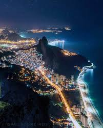

Rally da Cidade Perdida

Você é um piloto no lendário **Rally da Cidade Perdida**. A rota, conhecida por suas belezas naturais e desafios extremos, começa agora! Escolha sua rota inicial.

Você começa no Rio de Janeiro, subindo a estrada sinuosa do Pico da Tijuca. É uma subida íngreme ao amanhecer para o primeiro ponto de checagem. Como você pilota?